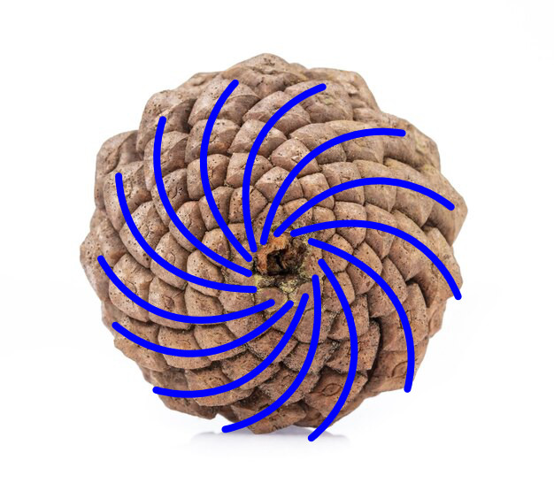

Pinecones, as well as many other plants, have a tendency to arrange their seeds in a pattern based on the golen ratio, phi. One thing you will notice is that there are both clockwise and counterclockwise spirals. If you count the spirals, you will also notice that they are Fibinacci numbers. In this illustration, we have 13 clockwise spirals, and 8 counterclockwise spirals.

Numbers that are adjacent to eachother in the fibinacci sequence when divided produce close approximations of phi. Example: 13 ÷ 8 = 1.625
You can try adjusting these spirals to see how the intersections of the opposing spirals create an organic looking packing of points.